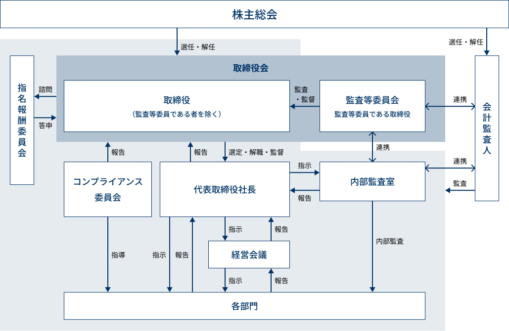

investors
IR情報
コーポレート・ガバナンス
コーポレート・ガバナンスに関する基本的な考え方
当社のコーポレート・ガバナンスに関する基本的な考え方は、「I Care Everybody Company ～あらゆる人々に慈しみの心をもって接する企業でありたい～」という企業理念のもと、継続的な事業の成長を通じてステークホルダーや地域の人をはじめ、広く社会に貢献することを目標としております。
当社はこの企業理念を実現するためには、コーポレート・ガバナンスの強化が不可欠との認識を有しており、取締役会及び監査等委員会を基軸としたコーポレート・ガバナンスの体制を構築しております。また、経営陣のみならず、全社員がコンプライアンスの遵守に努めており、当社を取り巻く経営環境の変化に速やかに対処できる業務執行体制を確立しつつ、ステークホルダーに対して透明性及び健全性の高い企業経営が実現できるものと考えております。
企業統治の体制の概要及び当該体制を採用する理由
当社が当該体制を採用する理由としては、コーポレート・ガバナンスを企業価値の最大化を目指すための経営統治機能と位置付けており、事業の拡大に対応して、適宜、組織の見直しを行い、各事業の損益管理、職務権限と責任の明確化を図ることができると考えたためであります。
当社は監査役設置会社として企業活動を行ってまいりましたが、さらなるコーポレート・ガバナンス体制の強化及び実効性の確保を図るとともに、中長期的な企業価値向上を目的として2019年10月10日開催の臨時株主総会決議により、「監査等委員会設置会社」に移行しております。
コーポレート・ガバナンス体制図

コーポレート・ガバナンス報告書
当社は東京証券取引所に「コーポレート・ガバナンスに関する報告書」を提出しております。